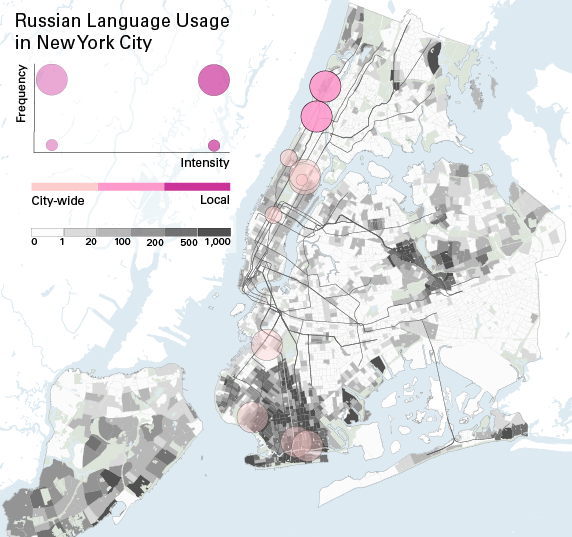

Introduction
IntroductionIntroduction
In 2014, the United Nations found that over 54% of the world's population lived in cities, and that number is predicted to increase.
1
This mass urbanization has led to important social, cultural, and linguistic changes worldwide. Large urban areas are increasingly sites of linguistic and cultural diversity: ‘multipli-cities’, expanded by global migration. 2
Though cities often officially celebrate diversity, differences in culture, race and ethnicity have long been aligned with inequality and exclusion in housing, public services, employment and more. 3
As a result, many languages and cultures become vulnerable once they enter the city. 
Russian speakers and sites of use, 2015
In many urban areas, a handful of "superlanguages" such as English, Mandarin, Spanish, Arabic, French, and a few others have become their own currency. Proficiency in one of these languages opens the door to economic and social opportunities otherwise unavailable.
4
These languages often serve as a lingua franca, allowing people to communicate across borders and boundaries. Nonetheless, the rapid spread of superlanguages often displaces and excludes the non-dominant languages migrants may have spoken before.5
Yet, in theory, cities can be sites of maintenance for less-dominant languages as they provide spaces for diasporic communities to form and thrive. Assuming that languages thrive when they are meaningfully used by their speakers,
6
and cities offer active sites for that use, this project explores a spatial definition of language maintenance to supplement a generational one. It also illuminates the mechanisms by which institutions–both public and private-support or erode language communities.Starting from this perspective, this project asks how the city can maintain its linguistic diversity and be a key player in global language maintenance through allocation of public space to sites of language use. We will assemble quantitative population data with our own dataset on sites of use. Our hypothesis is that the number and type of physical spaces that non-dominant languages are used positively affects the maintenance of those languages in an urban setting.
Methods
Tagalog speakers and sites of use, 2015
Studies of language maintenance traditionally require a mixed methods approach, combining speaker interviews with demographic information.
4
By examining the spatial ecologies of language in urban areas and using an embedded single case study framework,7
we will use tools from network analysis, institutional analysis and spatial clustering to identify meaningful patterns. 8
At this stage of the project, we have begun to spatialize the process, and have created a series of maps to illustrate language change in New York City, and institutions of language use. Determining Languages
Languages are categorized according to two dimensions. First, by the number of speakers who reportedly live in the city, second by the number of institutions or annual events where one could reasonably expect to find speakers of a Language Other Than English (LOTE) at least once a year. As a result, there are four possible categories of languages.
- Many speakers / Many institutions (Chinese, French, Haitian)
- Many speakers / Few institutions (Albanian, Persian)
- Few speakers / Few Institutions (Mon-Khmer)
- Few speakers / Many Institutions (Armenian)
Armenian speakers and sites of use, 2015
Sites of use includes institutions and annual events such as arts and community programs, library collections and story times, programming in the language at public events, dual language schools and daycares, religious institutions, community centers, newspapers, and other programming in the local language.
The number of speakers is an estimate of the number of people who speak the language at home as determined by the American Community Survey 5-year estimates for 2015. This data is combines with Census records from 1990, 2000, and the American Community Survey from 2010 and 2015.
Data Collection
Institutions were identified by combining a variety of publicly available data sources into a database of organizations that promote or support language use. This database is culled from many sources, including NYC Open Data, Place Matters, the NYC Department of Education, directories of day care services, newspapers, religious centers, community centers, and personal conversations. In addition to pre-compiled lists, an extensive Internet search was performed: Using a list of 115 languages that are likely to be spoken in New York City, a research assistant searched for the name of the language both in English and in the language and the words, “New York City.” (i.e., the phrases, ‘Spanish New York City’ as well as ‘Español New York City’). The first three pages of links were explored, and all institutions that seem to exist where one could reasonably expect to use the language at least once a year were entered into the database. When it was ambiguous, the research assistant called to verify the institution. If it could not be verified, it was not added to the database.
The number of speakers was calculated from language and country of origin records in the Census and American Community Survey as well as data kept by schools, churches, and community organizations. Though there are over 6,000 languages in the world, and approximately 800 in New York City, the American Community Survey only asks about 40 different languages.
Analysis
Many of the sites of language use that we collected are either transient events that appear at designated times throughout the year, are highly multilingual sites where many languages can be used, or only promote non-English language use insomuch as other languages are available, but not expected. To distinguish between these types and more accurately represent the impact of each site, we created a taxonomy of language use. This approach is intended to help visualize the language maintenance infrastructure of New York City.
The taxonomy quantifies spatial coverage, frequency of use, and intensity of practice. Descriptions of each level follows. The examples are general. Not all institutions of each type fall into the categories described. So, for example, one grocery may primarily serve the neighborhood whereas another may serve the entire city. To validate the rankings, two research assistants visited websites, made phone calls to institutional leaders, and visited the locations in-person. Because this is a time consuming approach, it was only performed for the languages we are currently focusing on.
Spatial Coverage: Institutions serving...
3: the entire city, (embassies and newspapers);
2: a borough or large neighborhood (large churches or libraries);
1: local area (laundromats or corner stores).
Frequency: Institutions that...
3: multiple times a week;
2: monthly or above;
1: annual or 2x a year.
Intensity: Institutions where...
3: ability in the LOTE is assumed (elder care centers, most resources for newcomers);
2: bilingualism is the norm, and there is little difference in services or access to materials based on language used (dual language programs, some churches, some doctors);
1: translations are available, and phone translation is available if requested.
Employing this taxonomy, we can begin to question the relationship between space and language.
Results
Looking at the maps together, there is no clear "center of multilingualism." That is, languages are spread throughout the city, clustered into groups in each of the five boroughs. This reflects the nature of New York City more generally: As a large, multilingual, multicultural metropolis, languages are woven into the daily life.
French speakers and sites of use, 2015
French, for example, is largely centered around Manhattan, both lower and upper, though there are some outposts in Brooklyn and Western Queens and North Brooklyn. Almost all of the sites serve a city-wide population. Though the sites of language use are clustered together, it seems that there is a French speaking population dispersed throughout the city, in every borough.
Haitian speakers and sites of use, 2015
We can contrast this with Hatian Creole, the sites of which can be found in two concentrated areas, and speakers themselves are also concentrated in two different, but also relatively compact areas. Interestingly, the sites of language use are not necessarily directly correlated with where Haitian speakers live (note the cluster of sites in the Western Bronx versus the cluster of speakers living in Eastern Queens).
These maps illustrate that institutional presence has little to do with where people live. That is, at this stage in the project, we don't see a relationship between where speakers live and language institutions such as schools, churches, or groceres. There are at least two explanations for this. First, our data is highly anecdotal and incidental, we may be missing sites of language use. Alternatively, there may be another force concentrating speakers together such as rent or transportation. As we interview speakers, we are confident that this will become clearer.
Next Steps
The next stage of this project is to conduct interviews with speakers throughout the city to better understand community attitudes towards language maintenance, bilingualism, and the role of language in social spaces. Through interviews with community members, we expect to increase our knowledge of sites of language use as well as their relative value to the community. As this project continues to evolve, we hope to better understand how having a place to meaningfully use one's language affects language attitudes, and to what extent such places motivate younger generations to maintain minority languages.
Project Team: Laura Kurgan, Michelle McSweeney, Bernadette Baird-Zars, Rachel Fifi-Culp, and Dare Brawley
Return to Case Studies
3 Silver, C. (1997). The Racial Origins of Zoning in American Cities. In Manning, Ritzdorf, and Ritzdorf eds. Urban Planning and the African American Community: In the Shadows. Thousand Oaks, CA: Sage Publications, 1997
Yiftachel, O. (2000), Social Control, Urban Planning and Ethno-class Relations: Mizrahi Jews in Israel's ‘Development Towns’. International Journal of Urban and Regional Research, 24: 418–438.
Hayden, D. (2005). What Would a Nonsexist City Be Like?. Gender and planning: A Reader, 47.
Yiftachel, O. (2000), Social Control, Urban Planning and Ethno-class Relations: Mizrahi Jews in Israel's ‘Development Towns’. International Journal of Urban and Regional Research, 24: 418–438.
Hayden, D. (2005). What Would a Nonsexist City Be Like?. Gender and planning: A Reader, 47.
7Flyvbjerg, B. (2001). Making social Science Matter: Why Social Inquiry Fails and How it Can Succeed Again. Cambridge University Press.
Creswell, J. W. (2012). Collecting qualitative data. Educational Research: Planning, Conducting, and Evaluating Quantitative and Qualitative Research. Fourth ed. Boston: Pearson, 204-35.
Creswell, J. W. (2012). Collecting qualitative data. Educational Research: Planning, Conducting, and Evaluating Quantitative and Qualitative Research. Fourth ed. Boston: Pearson, 204-35.